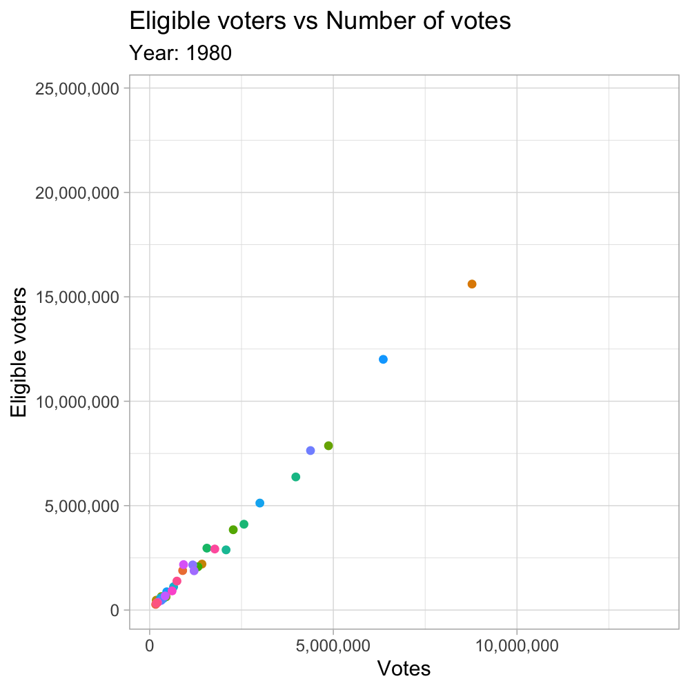

Week 28 of tidy Tuesday is a dataset containing the number of age-eligible voters versus total ballots/votes counted by state and year.
Using the gganimate library, I created an animation over time of the number of eligible voters versus the number of votes.

library(dplyr)
library(gganimate)
library(scales)
# Load data
voter_data <- readr::read_csv("https://raw.githubusercontent.com/rfordatascience/tidytuesday/master/data/2018/2018-10-09/voter_turnout.csv")
# Remove unwanted entries
state_data <- voter_data %>%
filter(!state %in% c("United States", "United States (Excl. Louisiana)")) %>%
mutate(year = as.integer(year))
# Create base plot for animation
votes_vs_eligible <- ggplot(state_data, aes(votes, eligible_voters, colour = state)) +
geom_point(show.legend = FALSE) + theme_light() +
scale_y_continuous(labels = comma_format()) +
scale_x_continuous(labels = comma_format()) +
labs(title = 'Eligible voters vs Number of votes',
subtitle = 'Year: {frame_time}',
y = 'Eligible voters', x = 'Votes') +
# extra lines needed for animation are below
transition_time(year) +
ease_aes('quartic-in-out') # determines how points will move
animate(votes_vs_eligible, fps = 7.5, width = 1000, height = 1000, res = 200) # create the animation
Decided to try out gganimate for #TidyTuesday week 28. My gif shows eligible voters constantly increasing while the number of votes increases for a presidential election year. #rstats #r4ds pic.twitter.com/mld76Dl4N7
— Aidan Boland (@AidoBo) October 10, 2018